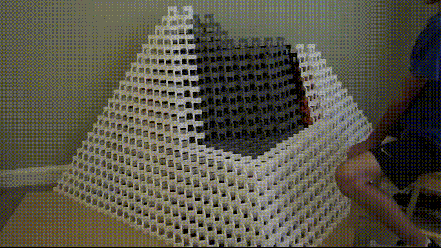

This presentation aims to introduce the concepts of generative science, complex systems, and agent-based models. We will explore the key principles and tools used in this field, along with potential applications of these techniques in socio-ecological studies.
Here is our itinerary:
Introduction
Key concepts about complex systems
A new method approach of doing science? The generative science
Entering the world of Agent-based models
Examples and case studies
Final remarks
Key concepts in complex systems
Complexity versus complicatedness
Types of complexity
Complex structures
[…] just because maximum entropy has low complexity does not mean that low entropy has maximum complexity. It’s actually more like this tea and milk. I mean, holding it like this is not very interesting. But as I pour the milk in, the two start to mix and these beautiful patterns emerge. They arise in an instant, and before you know it, they’re gone back to being featureless. Both low and high entropy are low in complexity. It’s in the middle where complex structures appear and thrive.
What is a complex system?
There are several definitions.
“Systems that don’t yield to compact forms of representation or description” (David Krakauer in Mitchell (2013));
“A system of many interacting parts where the system is more than just the sum of its parts” (Mark Newman in Mitchell (2013));
Systems with many connected agents that interact and exhibit self-organization and emergence behavior, all without the need for a central controller (Camilo Rodrigues Neto).
Dialectics at its finest (my working definition).
Complexity science
(System theory) Science or discipline that investigates models, principles, and laws that are valid to systems in general (Bertalanffy, 1968);
(System theory) “The attempt of a reductionist scientific tradition to come to terms with complexity, nonlinearity, and change through sophisticated mathematical and computational techniques, a groping toward a more dialectical understanding that is held back by its philosophical biases and the institutional and economic contexts of its development” (Levins, 1998).
Quem te viu, quem te vê
Whereas artificial-intelligence researchers seek to understand the mind by mimicking it on a computer, proponents of artificial life hope to gain insights into a broad range of biological phenomena. And just as artificial intelligence has generated more portentous rhetoric than tangible results, so has artificial life. (1995)
Complexity science
Reducionism versus compression
[…] where does complexity science fit? Well, complexity science is very quantitative, by and large, it’s very historical, we’re studying you know, adaptive agents, and it’s very compressive, because we’re looking for mathematical theories that capture essential regularities. But what we are not is reductionist.
We’re not looking down levels to explain the level of interest. And that’s one of it’s defining features that will come back to at some point when we talk about emergence.
The 7 basics for complex adaptive systems
The seven basics consist of 4 properties and 3 mechanisms that are common to all complex adaptive systems:
Aggregation (property).
Nonlinearity (property).
Flows (property).
Diversity (property).
Tags (mechanism).
Internal models (mechanism).
Building blocks (mechanism).
“Complexity is common at intermediate levels of these characteristics: (1) diversity, heterogeneity; (2) interaction, dynamics; (3) connectivity, interconnectedness; (4) adaptation, learning, and evolution.” (Rodrigues Neto, 2022)
“Systems in which this is the case are said to be sensitively dependent on initial conditions. With a few more qualifications, to be considered presently, sensitive dependence can serve as an acceptable definition of chaos, and it is the one that I shall choose.”
Chaos
Seemingly random behavior can emerge from deterministic systems, with no external source of randomness.
The behavior of some simple, deterministic systems can be impossible, even in principle, to predict in the long term, due to sensitive dependence on initial conditions.
Chaos
Although the detailed behavior of a chaotic system cannot be predicted, there is some “order in chaos” seen in universal properties common to large sets of chaotic systems, such as the period-doubling route to chaos and Feigenbaum’s constant. Thus even though “prediction becomes impossible” at the detailed level, there are some higher-level aspects of chaotic systems that are indeed predictable.
Pseudonoise
“Chaoplexologists such as Wolfram assume that much of the noise that seems to pervade nature is actually pseudonoise, the result of some underlying, deterministic algorithm.” (Horgan, 2004)
“You are dealing with an emergence phenomenon when there is no need to look under the hood.” (Krakauer, 2023)
“There, we defined emergent phenomena to be simply stable macroscopic patterns arising from local interaction of agents.” (Epstein, 1999)
Emergence
[Smiley: eye - eye - mouth]
Emergence
How can something be more than the sum of its parts?
A molecule of \(\text{H}_2\text{O}\) is water?
Can you understand a anthill by studying a single ant?
Are you just a collection of cells?
Generative science: a new approach to doing science
Induction: inferring from particular data a general theory.
Deduction: reasoning from first principles to a general theory
Generative: using first principles to generate a particular set of data that can create a general theory
How it differs from traditional scientific methods
“Simulation is a third way of doing science. Like deduction, it starts with a set of explicit assumptions. But unlike deduction, it does not prove theorems. Instead, a simulation generates data that can be analyzed inductively. Unlike typical induction, however, the simulated data comes from a rigorously specified set of rules rather than direct measurement of the real world. While induction can be used to find patterns in data, and deduction can be used to find consequences of assumptions, simulation modeling can be used as an aid intuition.”
Induction and deduction combined. Deduction is used to generate data that can be analyzed inductively.
Unintended or unforeseen consequences
Here we recognize the basic idea of generative science which is to generate apparently unanticipated and infinite behavior based on deterministic and finite rules and parameters reproducing or resembling the behavior of natural and social phenomena.
Possible states, even if unlikely: by modelling such interactions, it can suggest that properties exist in the system that had not been noticed in the real world situation.

Exploring agent-based models
Agent-based modeling (ABM) is a computational modeling paradigm that enables us to describe how any agent will behave. The methodology of ABM encodes the behavior of individual agents in simple rules so that we can observe the results of these agents’ interactions. This technique can be used to model and describe a wide variety of processes, phenomena, and situations, but it is most useful when describing these phenomena as complex systems.
What is a model?
A model is a simplified representation of a system. It can be conceptual, verbal, diagrammatic, physical, or formal (mathematical).
Equation-based models (EBM) (Mathematical models) (e.g., The ideal gas law: \(\text{pV} = \text{nRT}\)) (see Avegliano & Sichman, 2023; Sayama, 2015).
Statistical models: it can be viewed as a subset of mathematical modeling, but is not really the same | e.g., black-box modelling versus regression modelling).
Physical models.
Aggregate computer modeling (e.g., system dynamic models).
[…] agent-based modeling is clearly a powerful tool in the analysis of spatially distributed systems of heterogeneous autonomous actors with bounded information and computing capacity.
Key components and how they work
Agents
Environment
Interaction
IBMs versus ABMs
There have been historical differences between individual- and agent-based models: IBMs focused on individual variability and local interactions, whereas ABMs focused on decision-making and adaptive behavior. But these differences are fading away […]
Agent-Based Models (ABMs) are typically used in social sciences and economics, while Individual-Based Models (IBMs) are commonly used in ecology and biology.
Verification, validation, and replication
Why use ABM?
Today, you don’t need to invest in infrastructure to work with simulations. You can use your machine or cloud computing services to run your simulations.
Epstein, J. M. (2006). Generative social science: studies in agent-based computational modeling. Princeton University Press.
Grimm, V., Railsback, S. F., Vincenot, C. E., Berger, U., Gallagher, C., DeAngelis, D. L., Edmonds, B., Ge, J., Giske, J., Groeneveld, J., Johnston, A. S. A., Milles, A., Nabe-Nielsen, J., Polhill, J. G., Radchuk, V., Rohwäder, M.-S., Stillman, R. A., Thiele, J. C., & Ayllón, D. (2020). The ODD protocol for describing agent-based and other simulation models: A second update to improve clarity, replication, and structural realism. Journal of Artificial Societies and Social Simulation, 23(2), 7. https://doi.org/10.18564/jasss.4259
Mitchell, M. (2009). Complexity: a guided tour. Oxford University Press.
Wilensky, U., & Rand, W. (2015). An introduction to agent-based modeling: modeling natural, social, and engineered complex systems with NetLogo. The MIT Press.
Railsback, S. F., & Grimm, V. (2019). Agent-based and individual-based modeling: A practical introduction (2. ed.). Princeton University Press.
Smaldino, P. E. (2023). Modeling social behavior: mathematical and agent-based models of social dynamics and cultural evolution. Princeton University Press.
Final remarks
This presentation was created using the Quarto Publishing System. Code and materials are available on GitHub.
Avegliano, P., & Sichman, J. S. (2023). Equation-based versus agent-based models: Why not embrace both for an efficient parameter calibration? Journal of Artificial Societies and Social Simulation, 26(4), 3. https://doi.org/10.18564/jasss.5183
Axelrod, R. (1997). Advancing the art of simulation in the social sciences. In R. Conte, R. Hegselmann, & P. Terna (Eds.), Simulating Social Phenomena (Vol. 456, pp. 21–40). Springer. https://doi.org/10.1007/978-3-662-03366-1_2
Bertalanffy, L. von. (1968). General system theory: Foundations, development, applications. George Braziller.
Box, Geoge. E. P. (1979). Robustness in the strategy of scientific model building. In R. L. Launer & G. N. Wilkinson (Eds.), Robustness in statistics (pp. 201–236). Academic Press. https://doi.org/10.1016/B978-0-12-438150-6.50018-2
Dawkins, R. (2016). The selfish gene (40th anniversary edition). Oxford University Press.
Dodig-Crnkovic, G., & Giovagnoli, R. (2013). Computing nature – a network of networks of concurrent information processes. In G. Dodig-Crnkovic & R. Giovagnoli (Eds.), Computing nature: Turing centenary perspective (Vol. 7, pp. 1–22). Springer. https://doi.org/10.1007/978-3-642-37225-4
Engels, F. (1954). Dialetics of nature (C. Dutt, Trans.; 2 ed. rev.). Progress Publishers.
Engels, F. (1978). Letters on historical materialism: To Joseph Bloch. In R. C. Tucker (Ed.), The Marx-Engels reader (2nd ed., pp. 760–765). W. W. Norton & Company.
Peirce, C. S. (2011). How to make our ideas clear. In R. B. Talisse & S. F. Aikin (Eds.), The pragmatism reader: From Peirce through the present. Princeton University Press.
Popper, K. (2005). Unended quest: An intellectual autobiography (2nd ed.). Taylor and Francis.
Popper, K. R. (1979). Objective knowledge: An evolutionary approach. Oxford University Press.
Popper, K. R. (2002). Conjectures and refutations: The growth of scientific knowledge. Routledge.
Popper, K. R. (2005). The logic of scientific discovery. Routledge.
Railsback, S. F., & Grimm, V. (2019). Agent-based and individual-based modeling: A practical introduction (2nd ed.). Princeton University Press.
Ribeiro, S. (2019). O oráculo da noite: a história e a ciência do sonho. Companhia da Letras.
Rodrigues Neto, C. (2022, December 6). Leis de escala: AKA power laws, scale free laws [Disciplina acadêmica]. Sistemas complexos I, São Paulo, SP.
Sayama, H. (2015). Introduction to the modeling and analysis of complex systems. Open SUNY Textbooks.
Schelling, T. C. (2006). Micromotives and macrobehavior. W.W. Norton & Company.
Shannon, C. E., & Weaver, W. (1998). The mathematical theory of communication. University of Illinois Press.
Wilensky, U., & Rand, W. (2015). An introduction to agent-based modeling: Modeling natural, social, and engineered complex systems with NetLogo. The MIT Press.
Yap, P. A. G., Lachica, Z. P., Paras, A. L., Panogalinog, I. G., Tubay, J. M., & Mata, M. A. (2023). An agent-based model of COVID-19 dynamics during enhanced community quarantine: Exploring the role of food relief system in the presence of two SARS-CoV-2 variants. Frontiers in Applied Mathematics and Statistics, 9. https://doi.org/10.3389/fams.2023.1068180
Thank you!
(AP) Appendices
(AP) Human difficulties in understanding complex systems
“Primate brain”: Human beings have difficulty understanding complex systems because they are not designed to do so. Our brains evolved to deal with the immediate environment, not to understand the intricacies of the global economy or the climate system.
Humans have difficult to simulate steps in their minds. We are not good at understanding exponential growth, for example.
Oracle of the Night: Dreams as simulations? (Ribeiro, 2019).
(AP) Isn’t that psychohistory?
(AP) Dialectical materialism’s conjecture
Materialists, on the other hand, believe that only matter and its physical properties are real, while mind, thoughts, and the like are simply manifestations of matter. The idealist tries to explain physical matter as a by-product of mind; the materialist tries to explain mind as a by-product of matter.
(AP) Dialectical materialism’s conjecture
[…] I grew up implicitly thinking that intelligence was this really special human thing, kind of somewhat magical, and I now think that it’s sort of a fundamental property of matter. That’s definitely a change in my worldview.
(AP) Dialectical materialism’s conjecture
The 4 Fundamental Laws of Dialectical Materialism by Engels and Marx (in opposition to Hegel’s idealist dialectic, inspired by Heraclitus):
Reciprocal action of matter in motion.
The law of the transformation of quantity into quality and vice versa.
The law of the interpenetration of opposites.
The law of the negation of the negation.
(AP) Dialectical materialism’s conjecture
No phenomenon in nature can be understood if considered in isolation, separate from surrounding phenomena.
The error [of Hegel] lies in the fact that these laws, as laws of thought, are imposed on nature and history, rather than being deduced from them.
Dialectics as the science of interconnections (sound familiar?).
(AP) Dialetics and the Law of excluded middle
Dialectical materialism will consider that something can be both A and not-A at the same time. This is in opposition to the Law of excluded middle, which states that something can only be A or not-A. It assumes a paraconsistent logic, instead of a classical logic.
(AP) Popper’s vision of science
I suggest that it is the aim of science to find satisfactory explanations, of whatever strikes us as being in need of explanation.
(AP) Dialetics: a non-falsiable conjecture
Dialectics must be understood as an non-falsifiable conjecture. It should be an inspiration, but never as something given. Similar to the Free energy principle (FEP) proposed by Karl Friston (Friston, 2010).
“The whole development of dialectic should be a warning against the dangers inherent in philosophical system-building. It should remind us that philosophy must not be made a basis for any sort of scientific system and that philosophers should be much more modest in their claims. One task which they can fulfill quite usefully is the study of the critical methods of science.” (K. R. Popper, 2002)
(AP) Popper versus Dialetical materialism
Popper disagrees that physical reality develops dialectically.
Popper interprets Marx as an economic determinist and historicist.
Popper views Marx’s predictions, based on dialectical materialism, as something exact, subject to testing and refutation. At the same time, he points out that some of Marx’s predictions did not hold up when tested against history.
Although Popper praises Marx for his anti-dogmatic stance, he argues that criticisms of dialectical materialism were never tolerated by orthodox Marxists.
Popper asserts that the dialectical method is dangerous because it can be used as a form of evasion, thus becoming a tool for reinforcing dogma.
(AP) Popper versus Dialetical materialism
[…] I want to stress the point that although I should not describe myself as a materialist, my criticism is not directed against materialism, which I personally should probably prefer to idealism if I were forced to choose (which happily I am not). It is only the combination of dialectic and materialism that appears to me to be even worse than dialectic idealism.
(AP) Popper versus Dialetical materialism
“Nevertheless I personally think that Marx’s economism — his emphasis on the economic background as the ultimate basis of any sort of development — is mistaken and in fact untenable.” (K. R. Popper, 2002)
“According to the materialist conception of history, the ultimately determining element in history is the production and reproduction of real life. More than this neither Marx nor I have ever asserted. Hence if somebody twists this into saying that the economic element is the only determining one, he transforms that proposition into a meaningless, abstract, senseless phrase.” (Engels, 1978)
(AP) Popper versus Dialetical materialism
For our present purpose it is not so important to analyse Marx’s materialism and economism as to see what has become of the dialectic within his system. Two points seem to me important. One is Marx’s emphasis on historical method in sociology, a tendency which I have called ‘historicism’. The other is the anti- dogmatic tendency of Marx’s dialectic.
Hence, Marx’s anti-dogmatic attitude exists only in the theory and not in the practice of orthodox Marxism, and dialectic is used by Marxists, following the example of Engels’ Anti-Dühring, mainly for the purposes of apologetics to defend the Marxist system against criticism. As a rule critics are denounced for their failure to understand the dialectic, or proletarian science, or for being traitors. Thanks to dialectic the anti-dogmatic attitude has disappeared, and Marxism has established itself as a dogmatism which is elastic enough, by using its dialectic method, to evade any further attack. It has thus become what I have called a reinforced dogmatism.
(AP) Popper versus Dialetical materialism
Prophecy certainly need not be unscientific, as predictions of eclipses and other astronomical events show. But Hegelian dialectic, or its materialistic version, cannot be accepted as a sound basis for scientific forecasts.
Thus if forecasts based on dialectic are made, some will come true and some will not. In the latter case, obviously, a situation will arise which has not been foreseen. But dialectic is vague and elastic enough to interpret and to explain this unforeseen situation just as well as it interpreted and explained the situation which it predicted and which happened to come true. Any development whatever will fit the dialectic scheme; the dialectician need never be afraid of any refutation by future experience.
(AP) Popper versus Dialetical materialism
The whole development of dialectic should be a warning against the dangers inherent in philosophical system-building. It should remind us that philosophy must not be made a basis for any sort of scientific system and that philosophers should be much more modest in their claims. One task which they can fulfil quite usefully is the study of the critical methods of science.
(AP) Popper’s hypothetico-deductive method
The activity can be represented by a general schema of problem- solving by the method of imaginative conjectures and criticism, or, as I have often called it, by the method of conjecture and refutation. The schema (in its simplest form) is this:
flowchart LR
A[P1] --> B(TT)
B --> C[EE]
C --> D[P2]
(AP) Popper’s hypothetico-deductive method
Here \(\text{P}_1\), is the problem from which we start, \(\text{TT}\) (the ‘tentative theory’) is the imaginative conjectural solution which we first reach, for example our first tentative interpretation. \(\text{EE}\) (‘error- elimination’) consists of a severe critical examination of our conjecture, our tentative interpretation: it consists, for example, of the critical use of documentary evidence and, if we have at this early stage more than one conjecture at our disposal, it will also consist of a critical discussion and comparative evaluation of the competing conjectures. \(\text{P}_2\) is the problem situation as it emerges from our first critical attempt to solve our problems. It leads up to our second attempt (and so on).
(AP) Popper’s hypothetico-deductive method
The history of ideas teaches us very clearly that ideas emerge in logical or, if the term is preferred, in dialectical contexts. My various schemata such as
may indeed be looked upon as improvements and rationalizations of the Hegelian dialectical schema: they are rationalizations because they operate entirely within the classical logical organon of rational criticism, which is based upon the so-called law of contradiction; that is to say, upon the demand that contradictions, whenever we discover them, must be eliminated. Critical error-elimination on the scientific level proceeds by way of a conscious search for contradictions.
(AP) Popper against positivism (or the problem of induction)
Anti-verificationist (falsifiability as demarcation criterion).
(AP) Popper against positivism (or the problem of induction)
But I shall certainly admit a system as empirical or scientific only if it is capable of being tested by experience. These considerations suggest that not the verifiability but the falsifiability of a system is to be taken as a criterion of demarcation. In other words: I shall not require of a scientific system that it shall be capable of being singled out, once and for all, in a positive sense; but I shall require that its logical form shall be such that it can be singled out, by means of empirical tests, in a negative sense: it must be possible for an empirical scientific system to be refuted by experience.
(AP) Popper against positivism (or the problem of induction)
Everybody knows nowadays that logical positivism is dead. But nobody seems to suspect that there may be a question to be asked here — the question “Who is responsible?” or, rather, the question “Who has done it?”. (Passmore’s excellent historical article does not raise this question.) I fear that I must admit responsibility.”
(AP) The 7 conclusions of Popper on science
It is easy to obtain confirmations, or verifications, for nearly every theory —if we look for confirmations.
Confirmations should count only if they are the result of risky predictions; that is to say, if, unenlightened by the theory in question, we should have expected an event which was incompatible with the theory—an event which would have refuted the theory.
(AP) The 7 Conclusions of Popper on Science
Every ‘good’ scientific theory is a prohibition: it forbids certain things to happen. The more a theory forbids, the better it is.
A theory which is not refutable by any conceivable event is nonscientific. Irrefutability is not a virtue of a theory (as people often think) but a vice.
(AP) The 7 Conclusions of Popper on Science
Every genuine test of a theory is an attempt to falsify it, or to refute it. Testability is falsifiability; but there are degrees of testability: some theories are more testable, more exposed to refutation, than others; they take, as it were, greater risks.
Confirming evidence should not count except when it is the result of a genuine test of the theory; and this means that it can be presented as a serious but unsuccessful attempt to falsify the theory. (I now speak in such cases of ‘corroborating evidence’).
(AP) The 7 Conclusions of Popper on Science
Some genuinely testable theories, when found to be false, are still upheld by their admirers—for example by introducing ad hoc some auxiliary assumption, or by re-interpreting the theory ad hoc in such a way that it escapes refutation. Such a procedure is always possible, but it rescues the theory from refutation only at the price of destroying, or at least lowering, its scientific status. (I later described such a rescuing operation as a ‘conventionalist twist’ or a ‘conventionalist stratagem’).
(AP) The 7 Conclusions of Popper on Science
“One can sum up all this by saying that the criterion of the scientific status of a theory is its falsifiability, or refutability, or testability”.
(AP) A unit of cultural transmission
The new soup is the soup of human culture. We need a name for the new replicator, a noun that conveys the idea of a unit of cultural transmission, or a unit of imitation. ‘Mimeme’ comes from a suitable Greek root, but I want a monosyllable that sounds a bit like ‘gene’. I hope my classicist friends will forgive me if I abbreviate mimeme to meme.